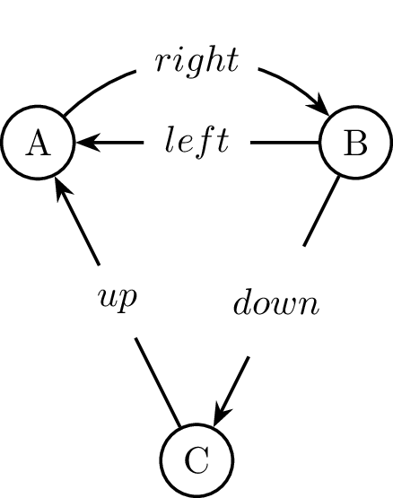

Samuel Evans-Powell
Inductive graphs
This is a short and sweet explanation of this paper by Martin Erweg.
I found the paper relatively easy to digest, and would highly recommend reading it and the corresponding fgl library. Nevertheless, I felt that some would benefit from an introduction to this paper in a different format, as well as a simpler implementation of the paper (which can be found here).
What is a graph?
Here we consider a graph to be a series of labelled nodes with directed edges between nodes. These edges too have labels (e.g. distance). You could visualize these graphs as destinations with roads between them.
See graph theory.
What is an inductive graph?
We can represent a graph "inductively" as being either an empty graph or a "context" appended to an empty graph.
-- 'n' and 'e' are the 'node' and 'edge' labels respectively. data Graph n e = Context n e & Graph n e | Empty
You've likely seen an "inductive" definition like this before:
data List a = Cons a (List a) | Nil
Returning to our graph, a context is made up of a list of edges moving away from the node (called successors), a list of edges moving towards the node (called predecessors), a node label and an int we use to reference the node.
We can define this in Haskell like so:
type Node = Int type Adj e = [(e, Node)] -- [(edge label, Node to path to)] type Context n e = (Adj e, Node, n, Adj e) -- (predecessors, node label, node, successors)
As an example, we would represent:
as:
g :: Graph Char Int g = ([(350, 1)], 'b', 2, []) & ([], 'a', 1, []) & Empty
Let's step through this incrementally, starting with g':
g' :: Graph Char Int g' = ([], 'a', 1, []) & Empty
First we add the node 'a' to the graph. At this point in time node 'b' is not in the graph, so we choose not to list any predecessors or successors.
Next, we add 'b':
g :: Graph Char Int g = ([(350, 1)], 'b', 2, []) & g'
It is at this point we add our single edge. We list it as a predecessor of 'b' because the edge is moving towards 'b'.
We consider this graph isomorphic (equal for all intents and purposes) to the following graph:
isoG :: Graph Char Int isoG = ([], 'a', 1, [(350, 1)]) & ([], 'b', 2, []) & Empty
All we've done is follow the same construction logic as before, flipping the order of construction of the nodes (and moving the edge to the successor list of 'a', because the edge moves away from 'a'). For our purposes, we don't care where the edge is stored, only that it is stored somewhere.
The most important idea to grasp is that each node only refers to nodes created before itself. We will use this property to great effect.
Matching
As a further example of this property, here is a larger graph:

gr :: Graph Char String gr = ([("left", 2), ("up", 3)], 1, 'a', [("right", 2)]) & ([], 2, 'b', [("down", 3)]) & ([], 3, 'c', []) & Empty
'c' refers to no nodes (even though it does have edges connecting it to both 'a' and 'b'), 'b' only refers to 'c' and 'a' refers to both 'b' and 'c'.
Note that if we remove the last node to be constructed (i.e. 'a'), we remove both the node and all edges connecting to it. This is because 'a' is constructed last, and so no other references to it may exist anywhere else in the graph representation.
This is a very useful property of this representation and as such it is helpful to be able to re-arrange the graph such that any arbitrary node may be the one constructed last. This process is called 'matching'.
Matching for 'c' would create something like the following graph (there are two possible representations with 'c' constructed last, this is only one of them):
gr :: Graph Char String gr = ([("down", 2)], 3, 'c', [("up", 1)]) & ([("left", 2)], 1, 'a', [("right", 2)]) & ([], 2, 'b', []) & Empty
The signature used for the match function is:
-- | Given a node and a graph, return either: -- (Just c, g') if the node is present in the graph, where 'c' is the context -- of the matched node and g' is the graph without the given node. -- or (Nothing, g) where g is the original graph. match :: Node -> Graph n e -> (Maybe (Context n e), Graph n e)
This allows us to get a context and a graph, we can modify the context and re-add it to the graph or remove it entirely.
Here is a very simple example of the usage of 'match':
-- | Remove a node from the graph. Returns original graph if node does not exist -- in graph. Also removes any connected edges. del :: Graph gr => Node -> gr a b -> gr a b del v g = case match v g of (Nothing, _) -> g (Just _, g') -> g'
If we find the node in the graph, we simply ignore it's context and return the graph without the given node.
For convenience, we also define a 'matchAny' operation, which will perform the same operation as 'match', only it will not require us to provide a specific node, instead matching on any node in the graph. In this case I've defined a partial function, so we should perform a check to ensure the graph is not empty before calling this function.
-- | Same as match, but match any node. matchAny :: gr a b -> (Context a b, gr a b)
These are the core operations on an inductive graph, and the hardest to digest, but by no means the only operations.
Actual representation
In reality an abstract type is used in place of our initial Haskell definition:
-- data Graph a b = Empty | Context a b & Graph a b class Graph gr where -- | Create an empty graph. empty :: gr n e -- | Is the graph empty? isEmpty :: gr n e -> Bool -- | Make a graph from lists of labelled nodes and labelled edges. mkGraph :: [LNode n] -> [LEdge e] -> gr n e -- | Get a list of labelled nodes in the graph. labelledNodes :: gr n e -> [LNode n] -- | Get a list of labelled edges in the graph. labelledEdges :: (Eq e) => gr n e -> [LEdge e] -- | Add a context to the given graph. (&) :: Context n e -> gr n e -> gr n e -- | Same as match, but match any node. matchAny :: gr a b -> (Context a b, gr a b) -- | Finds the given node in the graph and returns the graph excluding -- that node and the context of that node. match :: Node -> gr a b -> (Maybe (Context a b), gr a b) infixr 5 &
We then provide an instance of this type class for our particular implementation (in our case a Haskell IntMap was used).
Hopefully this article provides enough of a foundation for you to further explore inductive graphs on your own. Please feel free to get in touch if you have any questions/pointers for me.